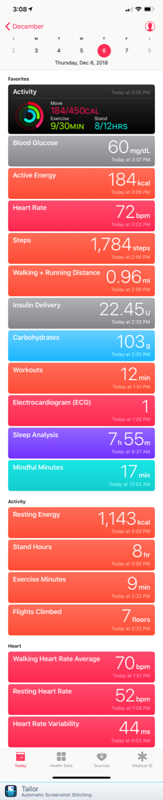

Health App¶
Overview of HealthKit and Health¶
There's often confusion over the terminology surrounding Apple's health data storage so let's start there.
- HealthKit -- Apple's iOS database for storing health-related data. App developers can choose to use HealthKit to store information from their apps such as heart rate, blood glucose, insulin use, and a long list of other parameters

- Health App -- Apple allows iOS users to manage HealthKit permissions and view stored HealthKit data through the use of Apple's Health app (standard on iPhone and iPods, but not available on iPads).
Loop's use of HealthKit¶
When you first install Loop onto your iPhone, you will be asked to setup Loop's access to the HealthKit database. Loop uses the iPhone's HealthKit to read and write blood glucose, insulin, and carbohydrate data depending on how you initially setup this section.
At a minimum, you will need these HealthKit settings:
Loop * insulin data: read and write * carbohydrate data: read and write * blood glucose data: read and write
Dexcom App * blood glucose data: write (if you have this disabled, Loop will still function but will not display blood glucose values older than 3 hours old)
You can always check your HealthKit settings for by opening the Health App, clicking on Sources at the bottom bar, and then clicking on the app's name you are interested in, for example Loop.

Potential conflicts can arise when third-party apps are granted access to HealthKit permissions that may interfer with Loop's specified data permissions. For example, carbohydrate data is stored in Nightscout and Spike for some users...you wouldn't want to enable Spike app to write duplicate carbohydrate entries that Loop would be reading. Therefore, you should disable other apps from writing carbohydrate data to HealthKit so that Loop does not read those other entries unintentionally. Also good practice, because carbohydrate entries in HealthKit that were created by non-Loop apps will not be able to customize carbohydrate absorption times nor be edited later if you needed.
Your use of Health App¶
Summaries of your carbohydrates, insulin, and blood glucose results can be found by clicking on the Health Data at the bottom bar, and then selecting either the large Nutrition box (for carbohydrates) or smaller Results line (for insulin deliveries and blood glucose results).

If you toggle on the "add to favorites" slider for the individual data categories (insulin, blood glucose, carbohydrates), the data from those categories will be added to your Today view for easy quick reference and access.

The summary data for the categories can help you follow monthly trends, help identify periods of insulin sensitivity/resistance, evaluate total daily insulin use, breakdown of basal vs bolus insulin, and carbohydrate consumptions. You can sort your data trends by day, week, month, or year views and scroll back through time in each of those data trends. You can even quickly use these data for endocrinology appointments discussions...as they provide the endocrinologist with a very quick and useful set of data points directly from your Loop.

If you drag two fingers separately, like you are spreading them apart, you can get averages for the data set your fingers are covering, as shown below.